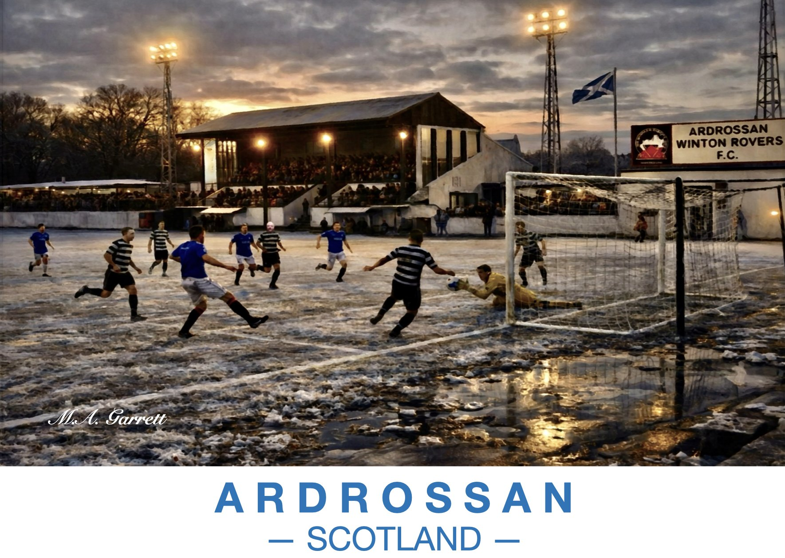

Ardrossan Winton Rovers
A floodlit winter match at the home of Ardrossan Winton Rovers F.C., the goalkeeper diving at the feet of a striker on a frozen, puddled pitch.
Paintings of the Ayrshire coast

A floodlit winter match at the home of Ardrossan Winton Rovers F.C., the goalkeeper diving at the feet of a striker on a frozen, puddled pitch.